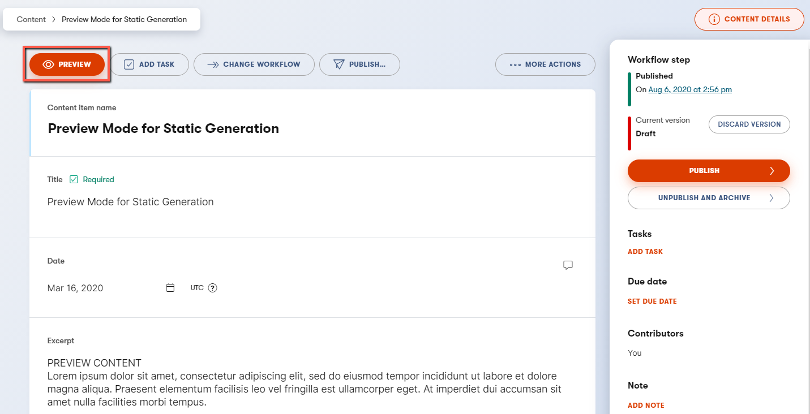

This example showcases Next.js’s Static Generation feature using Kentico Kontent as the data source.
https://next-blog-kontent.vercel.app/
Once you have access to the environment variables you’ll need, deploy the example using Vercel:
Execute
create-next-app
with npm or
Yarn to
bootstrap the example:
npx create-next-app --example cms-kontent cms-kontent-app
# or
yarn create next-app --example cms-kontent cms-kontent-appFirst, create an account on Kontent.ai.
The link above will provide you with the 90-days trial. Once you finish the trial, or even during the trial period, you could switch to the developer plan which is free of charge and offers all the features you’ll need to test out the example capabilities.
After signing up, create an empty project.
The content model defines the data structures of your application/websites. The structures are flexible and you can tailor them to your needs.
For this example you need to create a content model that defines an
author and a post content type.
You can import these automatically or by doing it manually
to familiarize yourself with the Kontent user interface.
To import the content models with their data follow the next steps:
Project ID and Management API keyInstall Kontent Backup Manager and import data to newly created project from kontent-backup.zip file (place appropriate values for apiKey and projectId arguments):
npm i -g @kentico/kontent-backup-manager
kbm --action=restore --apiKey=<Management API key> --projectId=<Project ID> --zipFilename=kontent-backup💡 Alternatively, you can use the Template Manager UI for importing the content.
Go to your Kontent project and publish all the imported items. > You could deactivate Management API key, it is not necessary any more.
You can safely ignore this step if you already imported the content models in Step 2.
Author content type
From your Kontent project, go to Content models and add a
new Content type:
you don’t have to modify the element configuration unless specified
AuthorName - Text elementPicture - Asset element - configure to
allow to select At most 1 asset and
Limit file types only to Adjustable images
Save the content type and continue.
The content type should look like this:
Post content type
From your Kontent project, go to Content models and add a new content type:
you don’t have to modify the element configuration unless specified
PostTitle - Text elementDate - Date & time elementExcerpt - Text elementContent - Rich Text elementCover Image - Asset Text element -
configure to allow to select At most 1 asset and
Limit file types only to
Adjustable images - Content -
Slug - URL slug element -
auto-generated from Title element
Author - Linked items element -
configure to accept Exactly 1 item of type
Author
Save the content type and continue.
The content type should look like this:
Go to Content & Assets section in your project and click
Create new on the Content tab and select
Author content type.
Next, create another item based on Post content type:
Important: For each item, you need to click on Publish. If not, the entry will be in draft workflow step.
Copy the .env.local.example file in this directory to
.env.local (which will be ignored by Git):
Then set each variable on .env.local using the keys
Project settings > API keys:
KONTENT_PROJECT_ID - Should be the Project ID in
Project settings > API keys.
KONTENT_PREVIEW_API_KEY - One of the Preview API keys in
Project settings > API keys.
KONTENT_PREVIEW_SECRET - Can be any random string (but
avoid spaces), like MY_SECRET - this is used for
Preview Mode.
Your blog should be up and running on http://localhost:3000! If it doesn’t work, post on GitHub discussions.
In your Kontent project, go to
Project Settings > Preview URLs and set a new preview
URL for the Post content type to:
http://localhost:3000/api/preview?secret=<KONTENT_PREVIEW_SECRET>&slug={URLslug}
Replace <KONTENT_PREVIEW_SECRET> with its respective
value in .env.local:
Once saved, go to one of the posts you’ve created and:
[Draft] in front of the title. > Mind the title also
regenerates the URL slug, if you want to change any other field that
does not influence URL slug, feel free to do so.
.
You will now be able to see the updated title. To exit preview mode, you can click on Click here to exit preview mode at the top of the page.
You can deploy this app to the cloud with Vercel (Documentation).
To deploy your local project to Vercel, push it to GitHub/GitLab/Bitbucket and import to Vercel.
Important: When you import your project on Vercel, make
sure to click on Environment Variables and set them to
match your .env.local file.
Alternatively, you can deploy using our template by clicking on the Deploy button below.